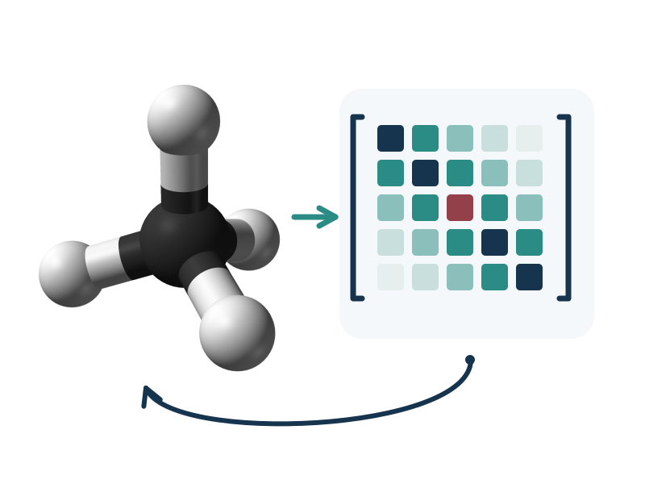
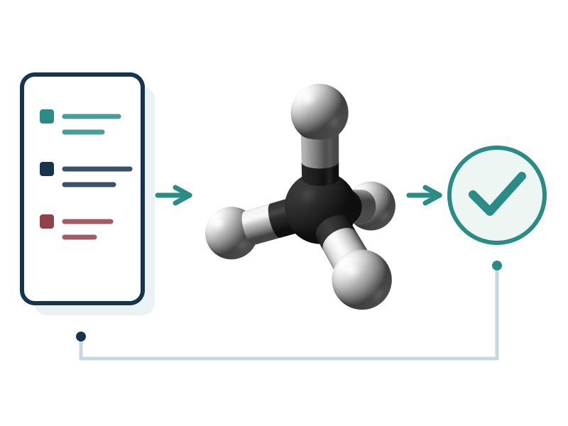
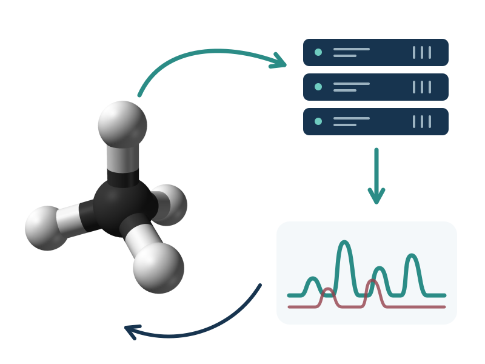
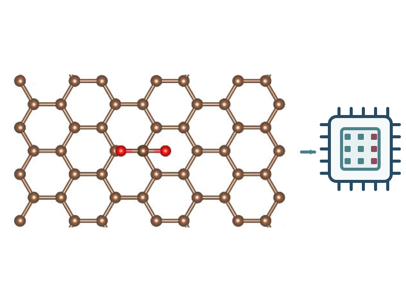
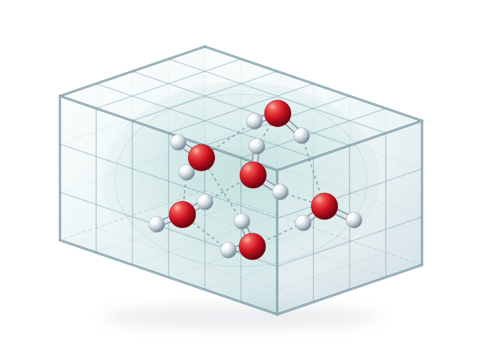
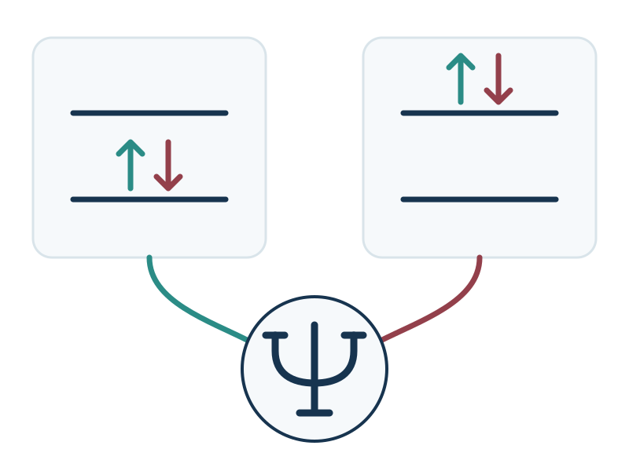
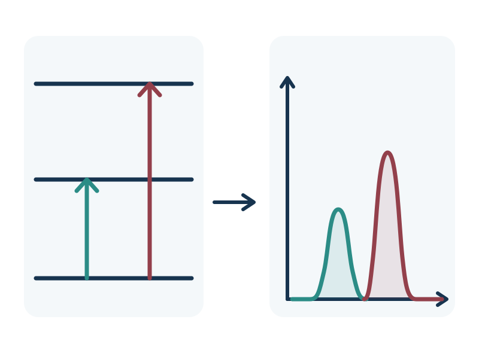
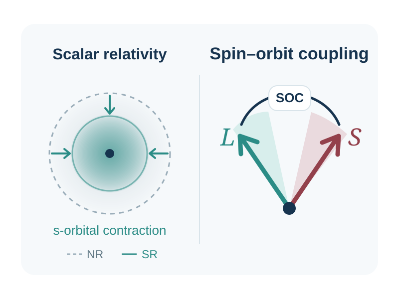

电子结构的机器学习
利用 SCF 反馈训练机器学习哈密顿量，以学习得到的电子密度减少 SCF 迭代，并用机器学习力场预优化加速 DFT 几何优化。
机器学习哈密顿量 · SCF 自蒸馏 · 机器学习电子密度 · 机器学习力场
我是加州大学伯克利分校与劳伦斯伯克利国家实验室的理论化学博士候选人，由 Martin Head-Gordon 教授和 Jin Qian 博士共同指导，同时在字节跳动 Seed–AI for Science担任研究科学家实习生。
我将量子化学与人工智能相结合，让分子模拟更好地服务于实际问题。
我的 AI for Science 研究涵盖机器学习哈密顿量、电子密度与力场，大语言模型的科学评测基准，以及连接模拟与光谱分析的智能体工作流。
我的量子化学研究结合 GPU 计算、实空间密度泛函理论、量子蒙特卡洛和多参考方法，研究强关联、激发态与光谱问题。

利用 SCF 反馈训练机器学习哈密顿量，以学习得到的电子密度减少 SCF 迭代，并用机器学习力场预优化加速 DFT 几何优化。
机器学习哈密顿量 · SCF 自蒸馏 · 机器学习电子密度 · 机器学习力场

通过打乱和反事实输入评测分子结构推理，检验大语言模型对反应机理、过渡态与合成的推理能力，并为科学智能体基准贡献评测任务。
科学推理 · 大语言模型评测

从自然语言指令出发，自动完成结构准备、模拟、高性能计算任务执行和多模态光谱分析，并通过气相反应数字孪生连接理论与实验。
智能体人工智能 · 科研工作流 · 数字孪生 · 多模态光谱

在 GPU 上加速 THC、AFQMC 和实空间 DFT，用于大规模气相（分子）与凝聚相（周期性）体系模拟。
GPU 计算 · THC · AFQMC · 实空间 DFT · 气相／凝聚相

结合 GPU 加速、机器学习电子密度提供的 SCF 初猜，以及机器学习力场提供的几何初猜，开展复杂体系的大规模模拟。
实空间 DFT · GPU 计算 · 机器学习辅助初始化 · 大规模模拟
开发并应用 GPU 加速的辅助场量子蒙特卡洛方法，为过渡金属化合物构建高质量数据集。
AFQMC · 过渡金属化合物

采用 AFQMC、NOCI(-RSPT) 等方法，研究过渡金属化合物等强关联体系中的静态关联与动态关联。
强关联 · NOCI(-RSPT) · AFQMC · 过渡金属化合物

开发 ROKS-EDA 和用于电荷转移激发的冻结分子轨道初猜；研究小分子与团簇复合物的低能激发态及光电离过程。
ROKS-EDA · 电荷转移 · 低能激发态 · 光电离

研究过渡金属配合物中的相对论效应与自旋–轨道耦合。
相对论量子力学 · 自旋–轨道耦合 · 过渡金属配合物
详见[简历]。
量子化学方向研究科学家实习生
2026年6月—至今
基于 THC 的 GPU 加速量子化学；过渡金属体系的 AFQMC 参考数据；探索 MLDFT 训练方法。
研究生研究员
2022年11月—至今
机器学习辅助的 GPU 实空间 DFT；科学推理基准与智能体工作流；光谱、界面化学、二氧化碳捕集、半导体与光刻应用。
研究生研究员
2022年11月—至今
激发态与多参考量子化学；光电离驱动的反应；机器学习哈密顿量。
科研助理
2021年2月—2022年6月
利用机器学习研究离子液体性质与二氧化碳溶解度；构建 ILThermo 数据工作流。
化学博士（理论化学方向，在读）
2022年8月—预计2027年
化学理学学士
2018年9月—2022年6月
开发者
集成机器学习电荷密度模型；多节点、多 GPU 实空间 DFT；机器学习力场辅助的结构初始化；GPU 加速的 DFT 几何优化与分子动力学。
开发者
贡献者
用于 HF、DFT 和关联计算的复数轨道方法；轨道优化与能量分解；DFT 冻结轨道初猜。
贡献者
面向 GPU 上 Hartree–Fock 与电子关联计算的张量超收缩（THC）方法。
贡献者
面向 GPU 电子结构计算的张量超收缩（THC）方法。
贡献者
利用辅助场量子蒙特卡洛（AFQMC）生成过渡金属体系的参考数据。
* 共同贡献
已投稿 ICLR 2027（2026年）。 [arXiv]
MolP2SBench 评测大语言模型如何从物理性质推断分子结构。通过检验模型对所提供证据的依赖，以及证据变化时的响应，揭示基于物理性质进行分子推理的能力与局限。
已投稿 ICLR 2027（2026年）。 [OpenReview]
OPSD 以自洽场求解器作为预训练哈密顿量模型的教师，将对模型自身预测的修正转化为学习信号。迭代自蒸馏提升预测精度与迁移能力，同时降低对昂贵参考计算的依赖。
J. Comput. Chem. 47, e70482 (2026). [论文]
PARSEC.py 在模块化 Python 框架中结合实空间 Kohn–Sham DFT 与机器学习电荷密度初始化。分子基准测试表明，合适的密度初猜可以减少 SCF 迭代，而 GPU 加速可提高对角化与 Hartree 势计算的效率。
J. Am. Chem. Soc. 148, 35681–35693 (2026). [论文]
光电离实验与密度泛函理论揭示了局部水合环境如何影响 CO₂–H₂O 团簇中的氧—氧键形成。富水环境有利于生成过氧化物，而分子重排与蒸发提供了形成过氧化氢的间接路径。
J. Chem. Theory Comput. 22, 385–398 (2026). [论文]
面向双行列式 ROKS 激发态的能量分解框架，将初级激发与轨道弛豫区分开来。该方法通过轨道分析量化能量变化与电荷重分布，帮助理解价层、内层及电荷转移激发。
Phys. Chem. Chem. Phys. 27, 17533–17547 (2025). [论文]
冻结—释放方案将受约束的初猜与平方梯度最小化相结合，用于轨道优化 DFT。在超分子配位笼和染料—半导体复合物上的测试表明，该方法能够收敛到目标电荷转移激发态，并避免坍缩到更低能态。
Chem. Commun. 61, 10273–10286 (2025). [论文]
本综述介绍实空间 Kohn–Sham DFT 的理论基础与计算进展，以及其在界面光谱和碳捕集中的应用，并讨论大规模电子结构模拟的机遇、当前局限及面向百亿亿次计算的未来方向。
已投稿、撰写中及即将发布的论文
Chem. Sci.，已投稿。
Phys. Rev. Mater. 受邀撰稿，撰写中。
参与撰写下一篇 Q-Chem 软件综述论文。
慕尼黑工业大学 · 研究生
加州大学伯克利分校 · 博士后研究员 · Martin Head-Gordon 课题组 （现任）
南京大学 · 访问学生
哥伦比亚大学 · 化学博士生 （现任）
加州大学伯克利分校 · 本科生
哥伦比亚大学 · 化学物理博士生 （现任）
加州大学伯克利分校 · 本科生
劳伦斯伯克利国家实验室 · 科研助理 （现任）
加州大学伯克利分校 · 本科生